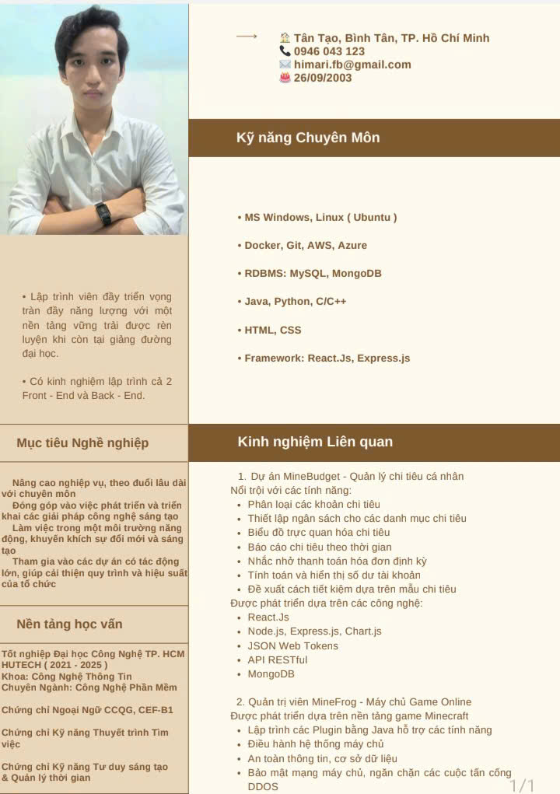
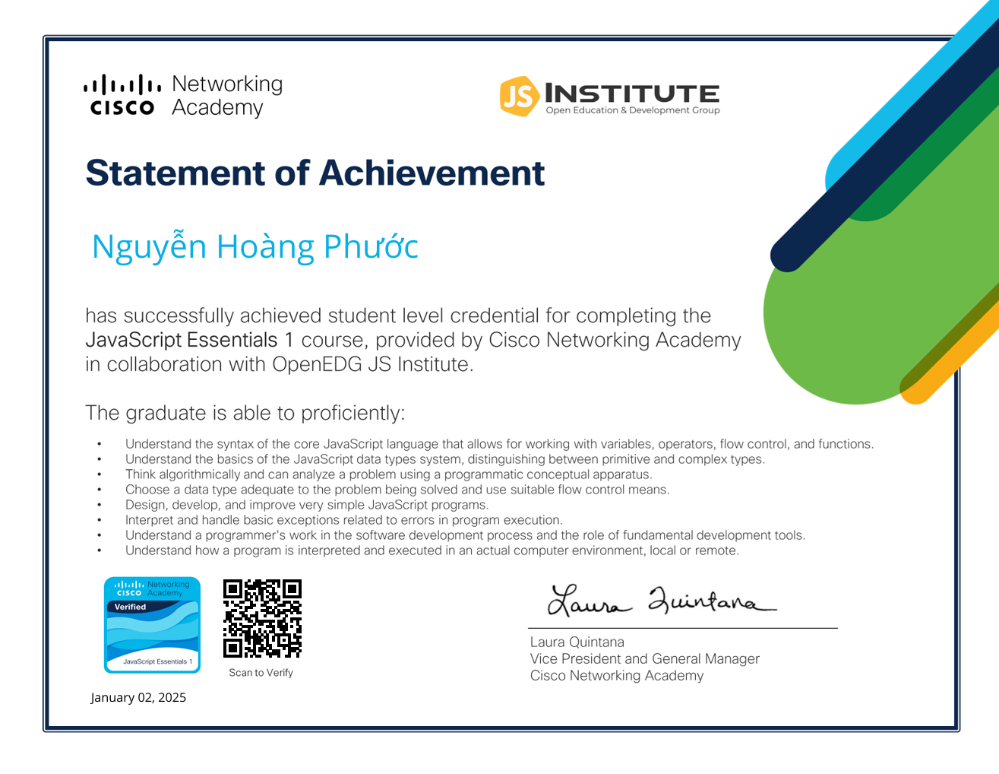
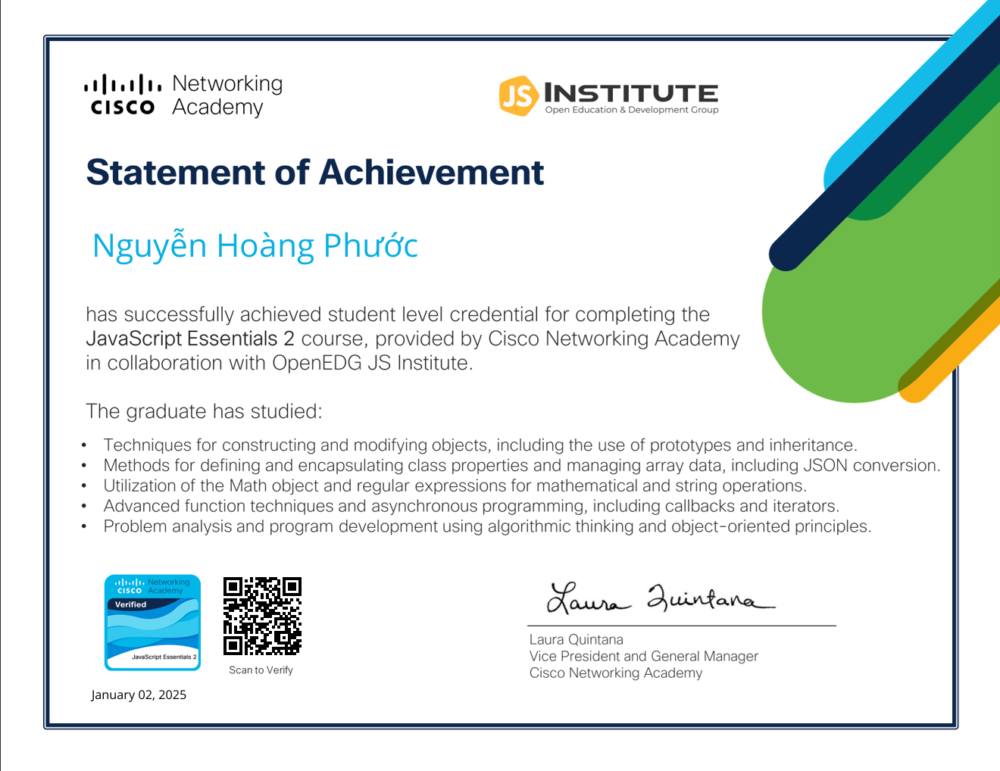
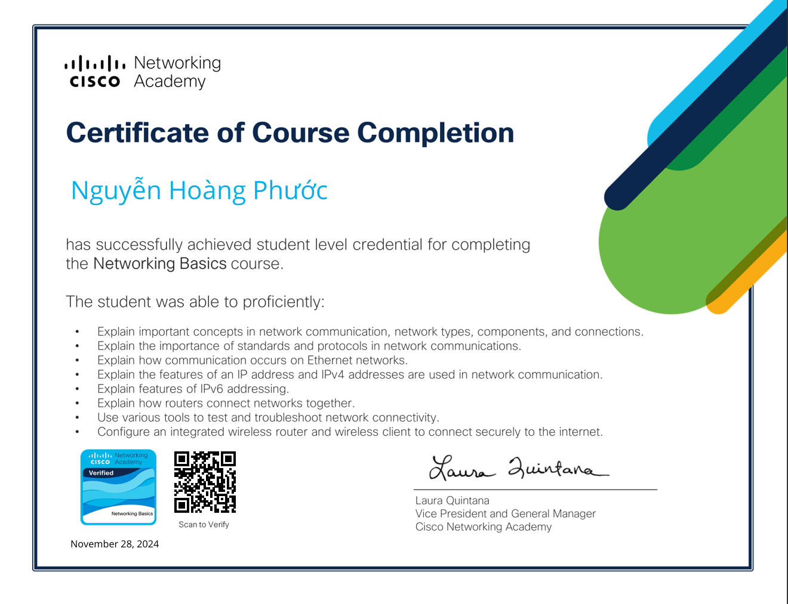

About Me
Lập Trình Viên , Kiêm Bloger
Tôi là Nguyễn Hoàng Phước, là một lập trình viên đam mê với hơn 2 năm kinh nghiệm trong ngành công nghệ, chủ yếu làm việc với Java. Trong suốt sự nghiệp của mình, tôi đã phát triển một hiểu biết sâu rộng về lập trình hướng đối tượng và các phương pháp tốt nhất trong phát triển phần mềm, đặc biệt là việc xây dựng các ứng dụng có khả năng mở rộng và hiệu suất cao. Java luôn là ngôn ngữ tôi lựa chọn để phát triển các hệ thống back-end mạnh mẽ, và tôi có nền tảng vững chắc trong việc phát triển các ứng dụng phức tạp cũng như tích hợp các hệ thống. Một trong những dự án thú vị nhất mà tôi đã thực hiện là tạo các server Minecraft tùy chỉnh sử dụng Java. Tôi chuyên phát triển các plugin Minecraft và giải pháp phía server, cho phép người chơi có những trải nghiệm tương tác và hấp dẫn hơn. Tôi đã làm việc với các công nghệ server như Spigot và Bukkit, mở rộng các tính năng cơ bản của trò chơi với các tính năng đặc biệt như cơ chế game tùy chỉnh, nền kinh tế do người chơi điều khiển, và các hệ thống tạo thế giới nâng cao. Những kinh nghiệm này giúp tôi hiểu sâu về các tương tác server thời gian thực, lập trình bất đồng bộ và tối ưu hóa hiệu suất cho những máy chủ có số lượng người chơi lớn. Ngoài việc phát triển các dịch vụ Minecraft, tôi cũng đã xây dựng một loạt ứng dụng Java, từ các microservice quy mô nhỏ đến các giải pháp doanh nghiệp lớn. Tôi có kinh nghiệm sâu rộng với các framework như Spring Boot, Hibernate, và JavaFX, được sử dụng để xây dựng từ các API RESTful đến các ứng dụng desktop phức tạp. Tôi rất yêu thích việc giải quyết các thách thức kỹ thuật phức tạp và đảm bảo rằng phần mềm tôi tạo ra vừa hiệu quả vừa thân thiện với người dùng. Bên cạnh các kỹ năng kỹ thuật, tôi còn thích làm việc nhóm, huấn luyện các lập trình viên trẻ và chia sẻ kiến thức với cộng đồng. Tôi tin rằng các giải pháp tốt nhất đến từ sự hợp tác, và tôi luôn tìm cách cải thiện quy trình làm việc và đóng góp vào một môi trường làm việc tích cực và hiệu quả. Dù là xây dựng các hệ thống back-end vững mạnh, tối ưu hóa hiệu suất của các ứng dụng quy mô lớn hay khám phá các công nghệ mới, tôi luôn sẵn sàng đối mặt với thử thách và phát triển hơn nữa như một lập trình viên. Tôi luôn học hỏi, phát triển và đẩy mạnh giới hạn của những gì có thể làm với Java và các ngôn ngữ lập trình khác. Nếu bạn đang tìm kiếm một lập trình viên đam mê với việc lập trình, yêu thích việc giải quyết các vấn đề phức tạp và có khả năng tạo ra những trải nghiệm tuyệt vời, tôi rất mong được kết nối với bạn. Hãy cùng nhau xây dựng những điều tuyệt vời!
My CV
Bằng cấp và Chứng nhận
  © Nguyễn Hoàng Phước. Designed by Nguyễn Hoàng Phước